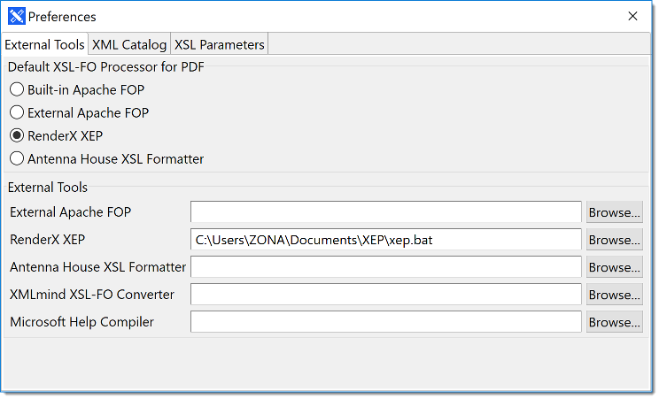

Default XSL-FO Processor for PDF
Conversa generates XSL-FO files that can be converted to PDF format using the following
XSL
transformation engines:
- Built-in Apache FOP 2.3
- External Apache FOP
- Antenna House XSL Formatter
- RenderX XEP
Use the External Tools tab of the Preferences
dialog to configure the default XSLT engine.

External Tools
If you want to generate PDF using XSLT engines other than the built-in Apache FOP,
you must
indicate the paths to the XSLT engine executables in the corresponding text boxes.
Use the
apropriate Browse... button to locate the executables in the file
system.
XMLmind XSL-FO converter is required to generate RTF, DOCX or ODT files from a DITA
map. Enter
the location of fo2rtf.bat (Windows) or fo2rtf (Mac OS
X or Linux) in the XMLmind XSL-FO Converter text box or use the
corresponding Browse... button to locate the program in the file system.
Microsoft Help Compiler is required to generate Html Help (Windows help) using conversa.
Enter
the location of hhc.exe in the Microsoft Help
Compiler text box or use the Browse... button next to it to
select the location from the file system.